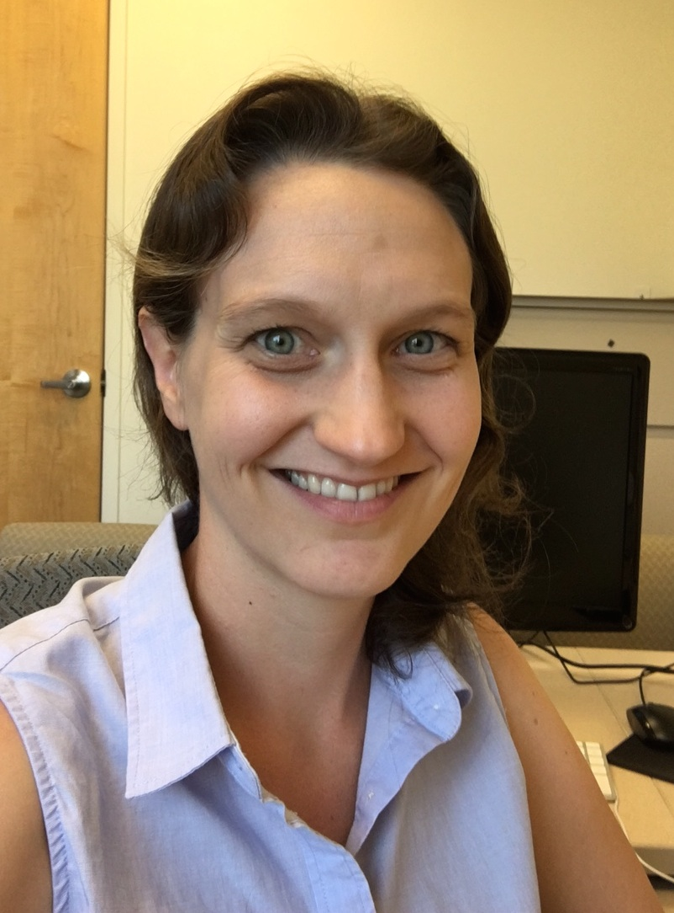
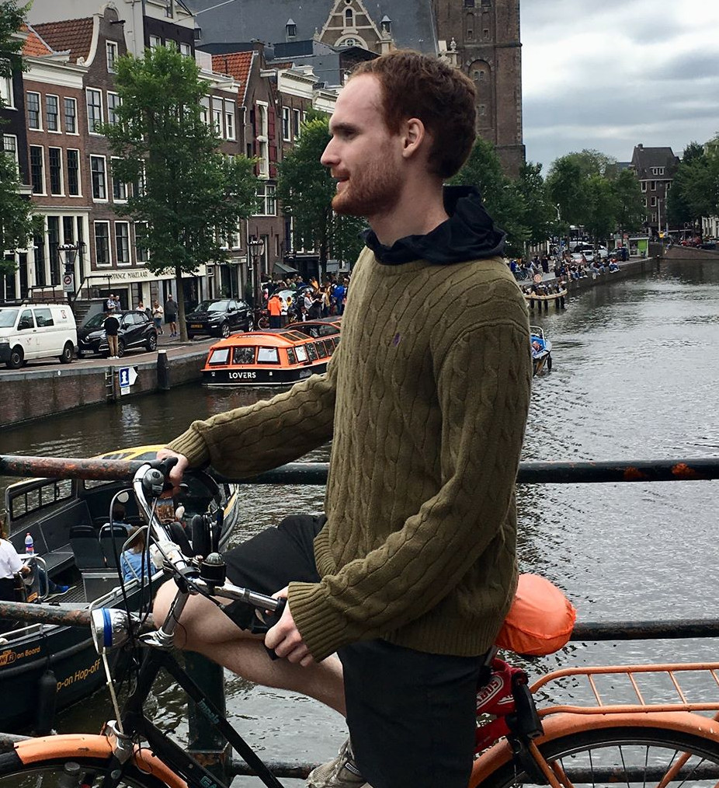
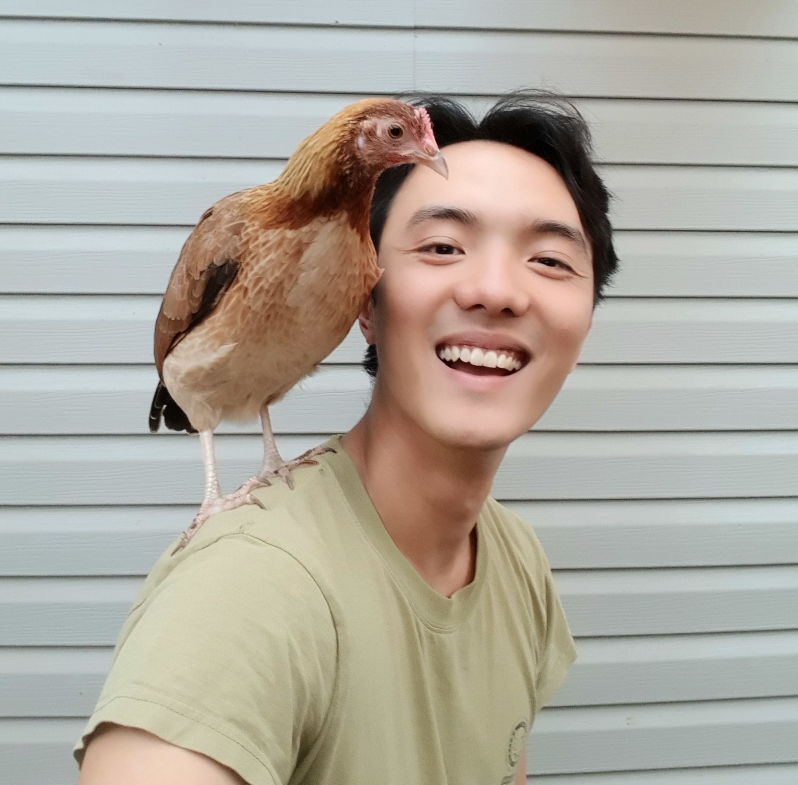
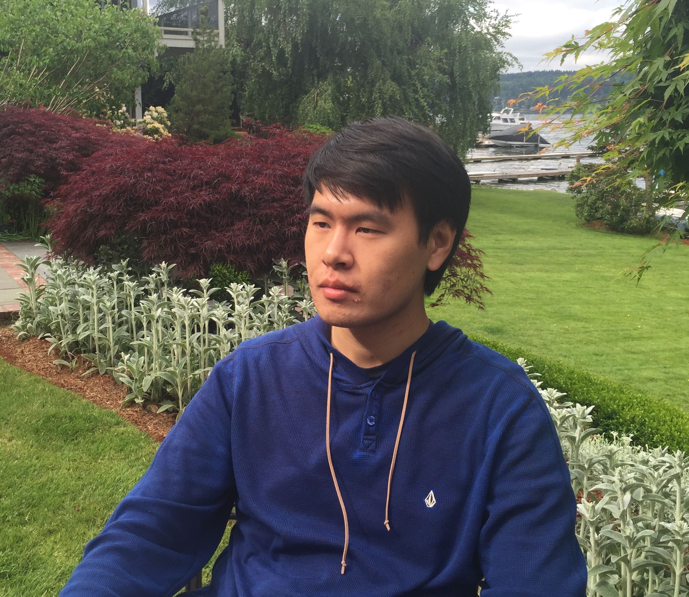
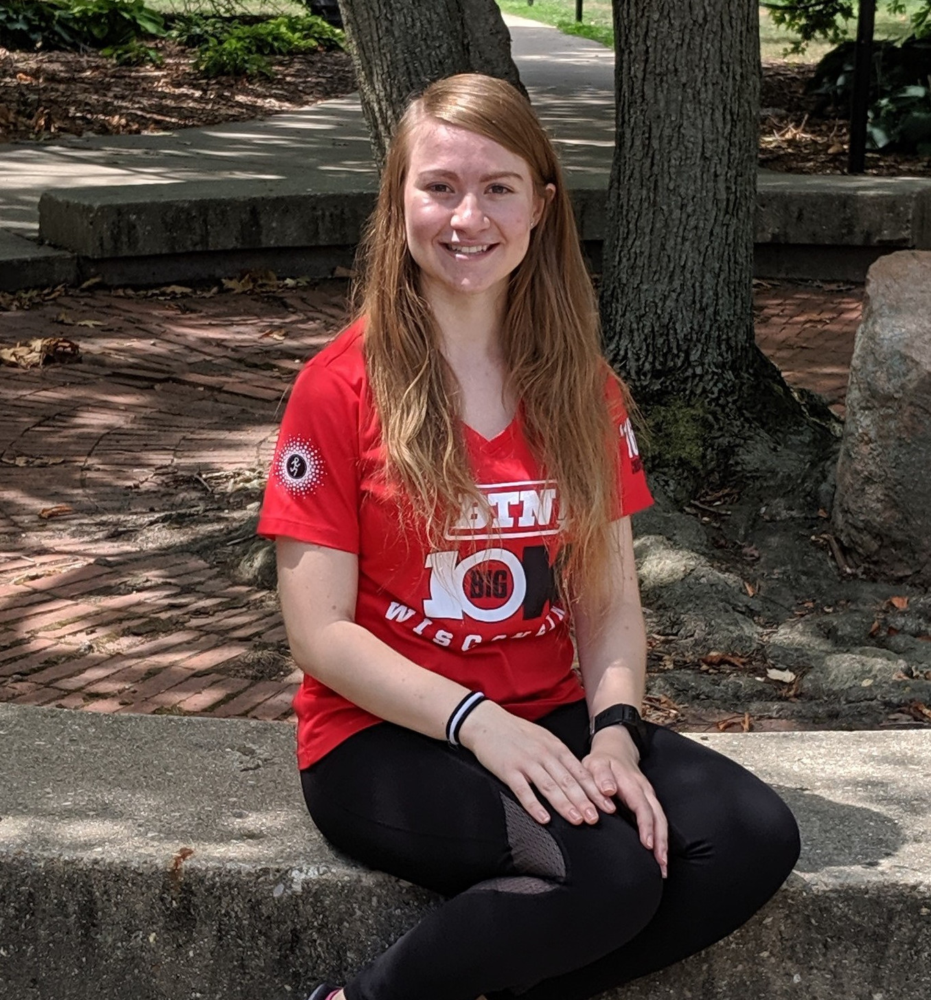

Members
Principal Investigators
Dr. Jessica L. Montag

Email: jmontag@illinois.edu
Website: http://languagestats.com/jessicamontag/
Jessica Montag studies how language abilities emerge with experience across the lifespan, including language comprehension, production, and reading. Dr. Montag uses varied methods and measures, including comprehension and production experiments in adults and children, compilation and analyses of text and speech corpora, and advanced quantitative methods.
Dr. Jon A. Willits

Email: jwillits@illinois.edu
Website: http://languagestats.com/jonwillits/
Jon Willits studies language and learning in infants, children, adults, and machines. His research uses computational, neurobiological, experimental, and naturalistic methods to better understand how people and machines learn, represent, and use languages and other forms of complex knowledge, especially word meanings and semantic knowledge.
Post-Docs
Anastasia Stoops
Email: agusico2@illinois.edu
Website: https://anastasiastoops.wordpress.com/
Anastasia Stoops studies how people learn and use language over the lifespan in order to improve cognitive remediation interventions in the educational and medical settings. She uses psychophysical behavioral paradigms coupled with eye-tracking and electrophysiological recordings.
Graduate Students
Philip Huebner

Email: huebner3@illinois.edu
Github: https://github.com/phueb
ResearchGate: https://researchgate.net/profile/Philip_Huebner
Philip Huebner studies computational models of language and knowledge acquisition.
Andrew Flores
Email: azf2@illinois.edu
Andrew Flores studies vocabulary and semantic development in infants and toddlers.
Lin Khern Chia

Email: lachia2@illinois.edu
Github: https://github.com/chialinkhern
Lin Khern studies semantic memory with behavioral paradigms and computational models.
Emily Mech
Email: enmech2@illinois.edu
Github: https://github.com/emilymech
ResearchGate: https://researchgate.net/profile/Emily_Mech
Emily Mech utilizes event-related potentials (ERPs), computational modeling, and behavioral methodology to examine how regularities in language and the world interact to affect the ways in which our linguistic and semantic knowledge is learned, structured, accessed, and communicated.
Shufan Mao

Email: smao9@illinois.edu
Shufan Mao is interested in representation of semantics, concept, and meanings. He is working on a distributional representation of concept and semantics using a network model which integrates distributional semantics, formal semantics and network science.
Jacki Erens

Email: jerens2@illinois.edu
Jacki Erens is interested in various aspects of language production, at both the word and sentence level.
Zeynep Marasli
Email: marasli2@illinois.edu
Lab Management
Katherine Koch
Email: kmkoch3@illinois.edu